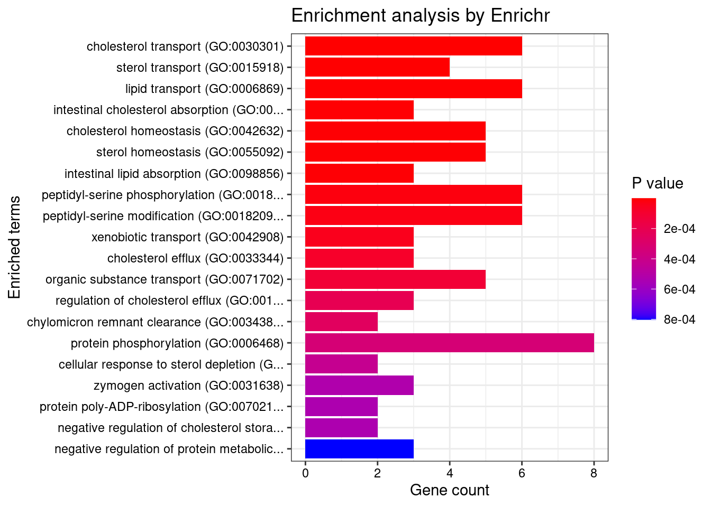
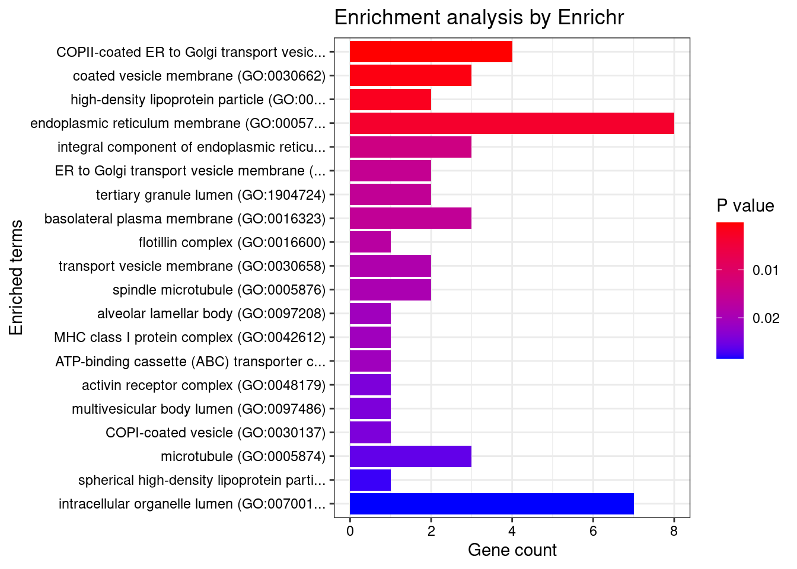
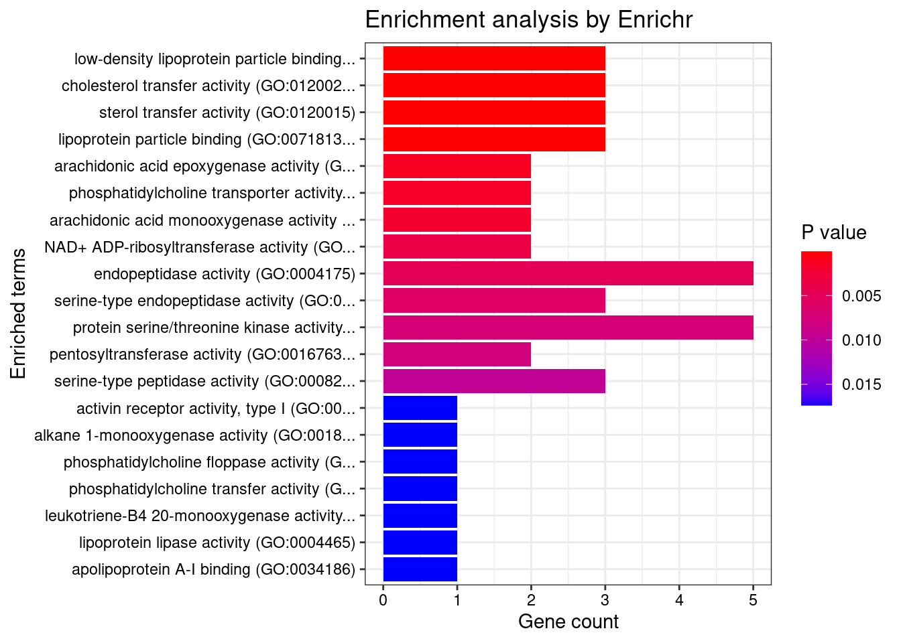

LDL - Expression and Splicing Jointly
Sheng Qian
2022-12-17
Last updated: 2023-02-23
Checks: 5 2
Knit directory: cTWAS_analysis/
This reproducible R Markdown analysis was created with workflowr (version 1.7.0). The Checks tab describes the reproducibility checks that were applied when the results were created. The Past versions tab lists the development history.
The R Markdown file has unstaged changes. To know which version of the R Markdown file created these results, you’ll want to first commit it to the Git repo. If you’re still working on the analysis, you can ignore this warning. When you’re finished, you can run wflow_publish to commit the R Markdown file and build the HTML.
Great job! The global environment was empty. Objects defined in the global environment can affect the analysis in your R Markdown file in unknown ways. For reproduciblity it’s best to always run the code in an empty environment.
The command set.seed(20211220) was run prior to running the code in the R Markdown file. Setting a seed ensures that any results that rely on randomness, e.g. subsampling or permutations, are reproducible.
Great job! Recording the operating system, R version, and package versions is critical for reproducibility.
Nice! There were no cached chunks for this analysis, so you can be confident that you successfully produced the results during this run.
Using absolute paths to the files within your workflowr project makes it difficult for you and others to run your code on a different machine. Change the absolute path(s) below to the suggested relative path(s) to make your code more reproducible.
| absolute | relative |
|---|---|
| /project2/xinhe/shengqian/cTWAS/cTWAS_analysis/data/ | data |
| /project2/xinhe/shengqian/cTWAS/cTWAS_analysis/code/ctwas_config_b38.R | code/ctwas_config_b38.R |
| /project2/xinhe/shengqian/cTWAS/cTWAS_analysis/data/mashr_sqtl/sqtl/mashr/mashr_Liver_Splicing_mapping.RData | data/mashr_sqtl/sqtl/mashr/mashr_Liver_Splicing_mapping.RData |
| /project2/xinhe/shengqian/cTWAS/cTWAS_analysis/data/mqtl/WholeBlood.db | data/mqtl/WholeBlood.db |
| /project2/xinhe/shengqian/cTWAS/cTWAS_analysis/data/G_list.RData | data/G_list.RData |
| /project2/xinhe/shengqian/cTWAS/cTWAS_analysis/code/locus_plot.R | code/locus_plot.R |
Great! You are using Git for version control. Tracking code development and connecting the code version to the results is critical for reproducibility.
The results in this page were generated with repository version 26813a2. See the Past versions tab to see a history of the changes made to the R Markdown and HTML files.
Note that you need to be careful to ensure that all relevant files for the analysis have been committed to Git prior to generating the results (you can use wflow_publish or wflow_git_commit). workflowr only checks the R Markdown file, but you know if there are other scripts or data files that it depends on. Below is the status of the Git repository when the results were generated:
Ignored files:
Ignored: .Rhistory
Ignored: .ipynb_checkpoints/
Ignored: analysis/figure/
Untracked files:
Untracked: LDL_TEME199_genetrack.pdf
Untracked: LDL_TEME199_locus.pdf
Untracked: Proposal plots.R
Untracked: RGS14.pdf
Untracked: RNF186.pdf
Untracked: SCZ_annotation.xlsx
Untracked: SLC8B1.pdf
Untracked: analysis/.ipynb_checkpoints/
Untracked: cache/
Untracked: code/.ipynb_checkpoints/
Untracked: data/.ipynb_checkpoints/
Untracked: data/FUMA_output/
Untracked: data/GO_Terms/
Untracked: data/GTEx_Analysis_v8_eQTL.tar
Untracked: data/G_list.RData
Untracked: data/IBD_ME/
Untracked: data/LDL/
Untracked: data/LDL_E_S/
Untracked: data/LDL_M/
Untracked: data/LDL_S/
Untracked: data/PGC3_SCZ_wave3_public.v2.tsv
Untracked: data/SCZ/
Untracked: data/SCZ_2018/
Untracked: data/SCZ_2018_S/
Untracked: data/SCZ_2020/
Untracked: data/SCZ_S/
Untracked: data/Supplementary Table 15 - MAGMA.xlsx
Untracked: data/Supplementary Table 20 - Prioritised Genes.xlsx
Untracked: data/UKBB/
Untracked: data/UKBB_SNPs_Info.text
Untracked: data/WhiteBlood_E/
Untracked: data/WhiteBlood_E_M/
Untracked: data/WhiteBlood_E_S_M/
Untracked: data/WhiteBlood_M/
Untracked: data/cpg_annot.RData
Untracked: data/eqtl/
Untracked: data/gencode.v26.GRCh38.genes.gtf
Untracked: data/gene_OMIM.txt
Untracked: data/gene_pip_0.8.txt
Untracked: data/gwas_sumstats/
Untracked: data/magma.genes.out
Untracked: data/mashr_Heart_Atrial_Appendage.db
Untracked: data/mashr_sqtl/
Untracked: data/mqtl/
Untracked: data/notes.txt
Untracked: data/scz_2018.RDS
Untracked: data/summary_known_genes_annotations.xlsx
Untracked: submit.sh
Untracked: temp_LDR/
Unstaged changes:
Deleted: analysis/Atrial_Fibrillation_Heart_Atrial_Appendage.Rmd
Deleted: analysis/Atrial_Fibrillation_Heart_Left_Ventricle.Rmd
Deleted: analysis/Autism_Brain_Amygdala.Rmd
Deleted: analysis/Autism_Brain_Anterior_cingulate_cortex_BA24.Rmd
Deleted: analysis/Autism_Brain_Caudate_basal_ganglia.Rmd
Deleted: analysis/Autism_Brain_Cerebellar_Hemisphere.Rmd
Deleted: analysis/Autism_Brain_Cerebellum.Rmd
Deleted: analysis/Autism_Brain_Cortex.Rmd
Deleted: analysis/Autism_Brain_Frontal_Cortex_BA9.Rmd
Deleted: analysis/Autism_Brain_Hippocampus.Rmd
Deleted: analysis/Autism_Brain_Hypothalamus.Rmd
Deleted: analysis/Autism_Brain_Nucleus_accumbens_basal_ganglia.Rmd
Deleted: analysis/Autism_Brain_Putamen_basal_ganglia.Rmd
Deleted: analysis/Autism_Brain_Spinal_cord_cervical_c-1.Rmd
Deleted: analysis/Autism_Brain_Substantia_nigra.Rmd
Deleted: analysis/BMI_Brain_Amygdala.Rmd
Deleted: analysis/BMI_Brain_Amygdala_S.Rmd
Deleted: analysis/BMI_Brain_Anterior_cingulate_cortex_BA24.Rmd
Deleted: analysis/BMI_Brain_Anterior_cingulate_cortex_BA24_S.Rmd
Deleted: analysis/BMI_Brain_Caudate_basal_ganglia.Rmd
Deleted: analysis/BMI_Brain_Caudate_basal_ganglia_S.Rmd
Deleted: analysis/BMI_Brain_Cerebellar_Hemisphere.Rmd
Deleted: analysis/BMI_Brain_Cerebellar_Hemisphere_S.Rmd
Deleted: analysis/BMI_Brain_Cerebellum.Rmd
Deleted: analysis/BMI_Brain_Cerebellum_S.Rmd
Deleted: analysis/BMI_Brain_Cortex.Rmd
Deleted: analysis/BMI_Brain_Cortex_S.Rmd
Deleted: analysis/BMI_Brain_Frontal_Cortex_BA9.Rmd
Deleted: analysis/BMI_Brain_Frontal_Cortex_BA9_S.Rmd
Deleted: analysis/BMI_Brain_Hippocampus.Rmd
Deleted: analysis/BMI_Brain_Hippocampus_S.Rmd
Deleted: analysis/BMI_Brain_Hypothalamus.Rmd
Deleted: analysis/BMI_Brain_Hypothalamus_S.Rmd
Deleted: analysis/BMI_Brain_Nucleus_accumbens_basal_ganglia.Rmd
Deleted: analysis/BMI_Brain_Nucleus_accumbens_basal_ganglia_S.Rmd
Deleted: analysis/BMI_Brain_Putamen_basal_ganglia.Rmd
Deleted: analysis/BMI_Brain_Putamen_basal_ganglia_S.Rmd
Deleted: analysis/BMI_Brain_Spinal_cord_cervical_c-1.Rmd
Deleted: analysis/BMI_Brain_Spinal_cord_cervical_c-1_S.Rmd
Deleted: analysis/BMI_Brain_Substantia_nigra.Rmd
Deleted: analysis/BMI_Brain_Substantia_nigra_S.Rmd
Deleted: analysis/BMI_S_results.Rmd
Deleted: analysis/Glucose_Adipose_Subcutaneous.Rmd
Deleted: analysis/Glucose_Adipose_Visceral_Omentum.Rmd
Modified: analysis/LDL_Liver_E_S.Rmd
Deleted: code/White_Blood_M_out/White_Blood_BreastMammary.err
Deleted: code/White_Blood_M_out/White_Blood_BreastMammary.out
Deleted: code/White_Blood_M_out/White_Blood_ColonTransverse.err
Deleted: code/White_Blood_M_out/White_Blood_ColonTransverse.out
Deleted: code/White_Blood_M_out/White_Blood_KidneyCortex.err
Deleted: code/White_Blood_M_out/White_Blood_KidneyCortex.out
Deleted: code/White_Blood_M_out/White_Blood_Lung.err
Deleted: code/White_Blood_M_out/White_Blood_Lung.out
Deleted: code/White_Blood_M_out/White_Blood_MuscleSkeletal.err
Deleted: code/White_Blood_M_out/White_Blood_MuscleSkeletal.out
Deleted: code/White_Blood_M_out/White_Blood_Ovary.err
Deleted: code/White_Blood_M_out/White_Blood_Ovary.out
Deleted: code/White_Blood_M_out/White_Blood_Prostate.err
Deleted: code/White_Blood_M_out/White_Blood_Prostate.out
Deleted: code/White_Blood_M_out/White_Blood_Testis.err
Deleted: code/White_Blood_M_out/White_Blood_Testis.out
Deleted: code/White_Blood_M_out/White_Blood_WholeBlood.err
Deleted: code/White_Blood_M_out/White_Blood_WholeBlood.out
Modified: code/locus_plot.R
Deleted: code/run_IBD_ctwas_rss_LDR_ME.R
Note that any generated files, e.g. HTML, png, CSS, etc., are not included in this status report because it is ok for generated content to have uncommitted changes.
These are the previous versions of the repository in which changes were made to the R Markdown (analysis/LDL_Liver_E_S.Rmd) and HTML (docs/LDL_Liver_E_S.html) files. If you’ve configured a remote Git repository (see ?wflow_git_remote), click on the hyperlinks in the table below to view the files as they were in that past version.
| File | Version | Author | Date | Message |
|---|---|---|---|---|
| Rmd | 26813a2 | sq-96 | 2023-02-23 | update |
| html | 26813a2 | sq-96 | 2023-02-23 | update |
| Rmd | c5aaf96 | sq-96 | 2023-02-02 | update |
| Rmd | 351ac23 | sq-96 | 2023-01-06 | update |
| html | 351ac23 | sq-96 | 2023-01-06 | update |
| Rmd | 486233b | sq-96 | 2023-01-06 | update |
| html | 486233b | sq-96 | 2023-01-06 | update |
| Rmd | fa84ed2 | sq-96 | 2023-01-05 | update |
| html | fa84ed2 | sq-96 | 2023-01-05 | update |
| Rmd | a72ca00 | sq-96 | 2023-01-05 | update |
| html | a72ca00 | sq-96 | 2023-01-05 | update |
| Rmd | 72d6af3 | sq-96 | 2023-01-05 | update |
| html | 72d6af3 | sq-96 | 2023-01-05 | update |
analysis_id <- params$analysis_id
trait_id <- params$trait_id
weight <- params$weight
results_dir <- paste0("/project2/xinhe/shengqian/cTWAS/cTWAS_analysis/data/", trait_id, "/", weight)
source("/project2/xinhe/shengqian/cTWAS/cTWAS_analysis/code/ctwas_config_b38.R")
options(digits = 4)Load ctwas results
Check convergence of parameters

#estimated group prior
estimated_group_prior <- estimated_group_prior_all[,ncol(group_prior_rec)]
print(estimated_group_prior) SNP Liver Liver_Splicing
0.0001129 0.0092207 0.0077965 #estimated group prior variance
estimated_group_prior_var <- estimated_group_prior_var_all[,ncol(group_prior_var_rec)]
print(estimated_group_prior_var) SNP Liver Liver_Splicing
12.94 38.08 19.66 #estimated enrichment
estimated_enrichment <- estimated_enrichment_all[ncol(group_prior_var_rec)]
print(estimated_enrichment)[1] 58.71#report sample size
print(sample_size)[1] 343621#report group size
print(group_size) SNP Liver Liver_Splicing
8696600 11003 21610 #estimated group PVE
estimated_group_pve <- estimated_group_pve_all[,ncol(group_prior_rec)]
print(estimated_group_pve) SNP Liver Liver_Splicing
0.036977 0.011243 0.009639 #total PVE
sum(estimated_group_pve)[1] 0.05786#attributable PVE
estimated_group_pve/sum(estimated_group_pve) SNP Liver Liver_Splicing
0.6391 0.1943 0.1666 Top expression/intron/CpG units
genename gene_id susie_pip group region_tag
29766 PSRC1 ENSG00000134222.16 1.0000 Expression 1_67
32083 LDLR intron_19_11120522_11123174 1.0000 Splicing 19_9
30995 ST3GAL4 ENSG00000110080.18 1.0000 Expression 11_77
31551 HPR ENSG00000261701.6 1.0000 Expression 16_38
29938 INSIG2 ENSG00000125629.14 1.0000 Expression 2_69
29916 ABCG8 ENSG00000143921.6 0.9989 Expression 2_27
31573 HP intron_16_72057466_72058254 0.9982 Splicing 16_38
30861 FADS1 ENSG00000149485.18 0.9977 Expression 11_34
30318 NPC1L1 ENSG00000015520.14 0.9948 Expression 7_32
30634 ABCA1 ENSG00000165029.15 0.9942 Expression 9_53
30610 TNKS ENSG00000173273.15 0.9874 Expression 8_12
32542 PLTP ENSG00000100979.14 0.9874 Expression 20_28
30284 HLA-C intron_6_31270085_31355317 0.9870 Splicing 6_25
32234 PRKD2 ENSG00000105287.12 0.9863 Expression 19_33
31177 GAS6 ENSG00000183087.14 0.9849 Expression 13_62
32512 RRBP1 ENSG00000125844.15 0.9821 Expression 20_13
30485 LRCH4 intron_7_100575304_100575705 0.9795 Splicing 7_61
29981 INHBB ENSG00000163083.5 0.9747 Expression 2_70
32157 CYP2A6 ENSG00000255974.7 0.9655 Expression 19_28
30093 CSNK1G3 ENSG00000151292.17 0.9614 Expression 5_75
31959 KDSR ENSG00000119537.15 0.9570 Expression 18_35
30314 SP4 ENSG00000105866.13 0.9542 Expression 7_19
31706 STAT5B ENSG00000173757.9 0.9493 Expression 17_25
30624 TTC39B ENSG00000155158.20 0.9457 Expression 9_13
30795 C10orf88 ENSG00000119965.12 0.9401 Expression 10_77
30069 PELO ENSG00000152684.10 0.9369 Expression 5_31
29984 ACVR1C ENSG00000123612.15 0.9367 Expression 2_94
30173 TRIM39 ENSG00000204599.14 0.9250 Expression 6_25
30657 PKN3 ENSG00000160447.6 0.9216 Expression 9_66
30331 DDX56 ENSG00000136271.10 0.9191 Expression 7_32
29986 GSK3B ENSG00000082701.14 0.9016 Expression 3_74
32255 FUT2 ENSG00000176920.11 0.8999 Expression 19_33
31522 ITGAL intron_16_30505462_30506715 0.8965 Splicing 16_24
30623 KIF13B intron_8_29092878_29099133 0.8776 Splicing 8_28
29813 CNIH4 ENSG00000143771.11 0.8710 Expression 1_114
29597 KLHDC7A ENSG00000179023.8 0.8675 Expression 1_13
31082 PHC1 intron_12_8921750_8922633 0.8414 Splicing 12_9
29882 ALLC ENSG00000151360.9 0.8407 Expression 2_2
30832 SPTY2D1 ENSG00000179119.14 0.8399 Expression 11_13
30552 POP7 ENSG00000172336.4 0.8373 Expression 7_62
31841 ABCA8 intron_17_68883882_68884331 0.8310 Splicing 17_39
29743 USP1 ENSG00000162607.12 0.8235 Expression 1_39
31415 LIPC intron_15_58431776_58431993 0.8159 Splicing 15_26
32130 CYP4F12 intron_19_15685197_15696430 0.8051 Splicing 19_13Top genes by expression/splicing/methylation pip
genename susie_pip group
12103 HP 1.0559 Splicing
13479 PARP9 1.0480 Splicing
12555 LRCH4 1.0307 Splicing
14673 SLC22A18 1.0244 Splicing
11442 ERGIC3 1.0111 Splicing
10054 ASGR1 1.0107 Splicing
9599 ABCA8 1.0070 Splicing
14498 SEC16B 1.0033 Splicing
12481 LDLR 1.0000 Splicing
6278 PSRC1 1.0000 Expression
7716 ST3GAL4 1.0000 Expression
3564 HPR 1.0000 Expression
3767 INSIG2 1.0000 Expression
43 ABCG8 0.9989 Expression
2672 FADS1 0.9977 Expression
5256 NPC1L1 0.9948 Expression
16 ABCA1 0.9942 Expression
10999 CYP4F12 0.9919 Splicing
12057 HLA-C 0.9876 Splicing
8364 TNKS 0.9874 Expression
5941 PLTP 0.9874 Expression
6176 PRKD2 0.9863 Expression
3056 GAS6 0.9849 Expression
6853 RRBP1 0.9821 Expression
13082 NADK2 0.9817 Splicing
14037 PXK 0.9804 Splicing
3753 INHBB 0.9747 Expression
9674 ACP6 0.9659 Splicing
1972 CYP2A6 0.9655 Expression
1875 CSNK1G3 0.9614 Expression
3962 KDSR 0.9570 Expression
7577 SP4 0.9542 Expression
7744 STAT5B 0.9493 Expression
8616 TTC39B 0.9457 Expression
896 C10orf88 0.9401 Expression
5695 PELO 0.9369 Expression
137 ACVR1C 0.9367 Expression
12291 ITGAL 0.9326 Splicing
8493 TRIM39 0.9250 Expression
5853 PKN3 0.9216 Expression
2105 DDX56 0.9191 Expression
12197 IL17RC 0.9039 Splicing
3333 GSK3B 0.9016 Expression
3002 FUT2 0.8999 Expression
12382 KIF13B 0.8776 Splicing
1664 CNIH4 0.8710 Expression
4035 KLHDC7A 0.8675 Expression
10473 CCDC57 0.8511 Splicing
12525 LIPC 0.8457 Splicing
13596 PHC1 0.8414 Splicing
334 ALLC 0.8407 Expression
7668 SPTY2D1 0.8399 Expression
6028 POP7 0.8373 Expression
11665 FLOT2 0.8269 Splicing
15748 UGT1A6 0.8245 Splicing
8803 USP1 0.8235 Expression
11660 FKRP 0.8103 Splicing
14938 SPRED2 0.8078 Splicing
13290 NR1I2 0.8014 SplicingTop genes by combined PIP
genename combined_pip expression_pip splicing_pip region_tag
2546 DDX56 1.455 0.919 0.536 7_32
2027 CNIH4 1.262 0.871 0.391 1_114
7614 PXK 1.217 0.237 0.980 3_40
9249 ST3GAL4 1.078 1.000 0.078 11_77
6681 PARP9 1.076 0.028 1.048 3_76
4312 HP 1.056 0.000 1.056 16_38
8419 SEC16B 1.038 0.035 1.003 1_87
6840 PELO 1.035 0.937 0.098 5_31
133 ACP6 1.033 0.067 0.966 1_73
5159 LRCH4 1.033 0.002 1.031 7_61
6332 NPC1L1 1.031 0.995 0.036 7_32
20 ABCA1 1.030 0.994 0.036 9_53
8702 SLC22A18 1.024 0.000 1.024 11_2
8204 RRBP1 1.016 0.982 0.034 20_13
760 ASGR1 1.011 0.000 1.011 17_6
3123 ERGIC3 1.011 0.000 1.011 20_21
10328 TTC39B 1.010 0.946 0.064 9_13
26 ABCA8 1.007 0.000 1.007 17_39
2421 CYP4F12 1.006 0.014 0.992 19_13
2397 CYP2A6 1.001 0.965 0.035 19_28
3708 GAS6 1.001 0.985 0.016 13_62
4319 HPR 1.000 1.000 0.000 16_38
4556 INSIG2 1.000 1.000 0.000 2_69
5028 LDLR 1.000 0.000 1.000 19_9
7410 PRKD2 1.000 0.986 0.014 19_33
7530 PSRC1 1.000 1.000 0.000 1_67
53 ABCG8 0.999 0.999 0.000 2_27
3247 FADS1 0.998 0.998 0.000 11_34
6032 NADK2 0.995 0.013 0.982 5_24
7128 PLTP 0.994 0.987 0.007 20_28
9879 TMEM199 0.990 0.548 0.442 17_17
4237 HLA-C 0.988 0.000 0.988 6_25
10029 TNKS 0.987 0.987 0.000 8_12
4539 INHBB 0.975 0.975 0.000 2_70
11450 ZSCAN31 0.974 0.421 0.553 6_22
2280 CSNK1G3 0.971 0.961 0.009 5_75
4787 KDSR 0.967 0.957 0.010 18_35
9084 SP4 0.954 0.954 0.000 7_19
9284 STAT5B 0.949 0.949 0.000 17_25
1128 C10orf88 0.940 0.940 0.000 10_77
171 ACVR1C 0.937 0.937 0.000 2_94
10605 USP53 0.936 0.152 0.785 4_77
4629 ITGAL 0.933 0.000 0.933 16_24
4483 IL17RC 0.925 0.021 0.904 3_8
10187 TRIM39 0.925 0.925 0.000 6_25
962 BCAT2 0.922 0.135 0.787 19_34
7027 PKN3 0.922 0.922 0.000 9_66
9218 SRRT 0.917 0.786 0.131 7_62
413 ALLC 0.914 0.841 0.073 2_2
4041 GSK3B 0.902 0.902 0.000 3_74
3641 FUT2 0.900 0.900 0.000 19_33
1079 BRI3 0.894 0.733 0.161 7_60
4816 KIF13B 0.878 0.000 0.878 8_28
6906 PHC1 0.873 0.031 0.841 12_9
4867 KLHDC7A 0.868 0.868 0.000 1_13
1480 CCDC57 0.867 0.016 0.851 17_47
9700 THOP1 0.862 0.123 0.739 19_3
5102 LIPC 0.858 0.012 0.846 15_26
6977 PIH1D1 0.853 0.111 0.742 19_34
9184 SPTY2D1 0.840 0.840 0.000 11_13
7236 POP7 0.837 0.837 0.000 7_62
10502 UGT1A6 0.835 0.010 0.825 2_137
2323 CTSH 0.832 0.639 0.193 15_37
3547 FLOT2 0.827 0.000 0.827 17_17
10569 USP1 0.823 0.823 0.000 1_39
9162 SPRED2 0.815 0.007 0.808 2_42
3537 FKRP 0.813 0.002 0.810 19_33
6365 NR1I2 0.813 0.011 0.801 3_74
7347 PPP6R2 0.813 0.022 0.791 22_24
9452 SYTL1 0.805 0.789 0.016 1_19GO enrichment analysis for genes with PIP>0.5
#number of genes for gene set enrichment
length(genes)[1] 70Uploading data to Enrichr... Done.
Querying GO_Biological_Process_2021... Done.
Querying GO_Cellular_Component_2021... Done.
Querying GO_Molecular_Function_2021... Done.
Parsing results... Done.
[1] "GO_Biological_Process_2021"
| Version | Author | Date |
|---|---|---|
| 26813a2 | sq-96 | 2023-02-23 |
Term
1 cholesterol transport (GO:0030301)
2 sterol transport (GO:0015918)
3 lipid transport (GO:0006869)
4 intestinal cholesterol absorption (GO:0030299)
5 cholesterol homeostasis (GO:0042632)
6 sterol homeostasis (GO:0055092)
7 intestinal lipid absorption (GO:0098856)
8 peptidyl-serine phosphorylation (GO:0018105)
9 peptidyl-serine modification (GO:0018209)
10 xenobiotic transport (GO:0042908)
11 cholesterol efflux (GO:0033344)
12 organic substance transport (GO:0071702)
13 regulation of cholesterol efflux (GO:0010874)
14 chylomicron remnant clearance (GO:0034382)
15 protein phosphorylation (GO:0006468)
16 cellular response to sterol depletion (GO:0071501)
17 zymogen activation (GO:0031638)
18 protein poly-ADP-ribosylation (GO:0070212)
19 negative regulation of cholesterol storage (GO:0010887)
20 negative regulation of protein metabolic process (GO:0051248)
21 cellular protein modification process (GO:0006464)
22 cellular response to low-density lipoprotein particle stimulus (GO:0071404)
23 membrane lipid biosynthetic process (GO:0046467)
24 phospholipid transport (GO:0015914)
25 peptidyl-threonine phosphorylation (GO:0018107)
26 intracellular cholesterol transport (GO:0032367)
27 positive regulation of protein export from nucleus (GO:0046827)
28 regulation of gene expression (GO:0010468)
29 regulation of cholesterol storage (GO:0010885)
30 reverse cholesterol transport (GO:0043691)
31 receptor-mediated endocytosis (GO:0006898)
32 positive regulation of cell death (GO:0010942)
33 peptidyl-threonine modification (GO:0018210)
34 high-density lipoprotein particle remodeling (GO:0034375)
35 activin receptor signaling pathway (GO:0032924)
36 epoxygenase P450 pathway (GO:0019373)
Overlap Adjusted.P.value
1 6/51 2.086e-05
2 4/21 3.495e-04
3 6/109 6.668e-04
4 3/9 7.542e-04
5 5/71 7.841e-04
6 5/72 7.841e-04
7 3/11 8.423e-04
8 6/156 1.972e-03
9 6/169 2.755e-03
10 3/20 3.983e-03
11 3/24 6.364e-03
12 5/136 8.484e-03
13 3/33 1.419e-02
14 2/7 1.590e-02
15 8/496 1.963e-02
16 2/9 2.375e-02
17 3/45 2.494e-02
18 2/10 2.494e-02
19 2/10 2.494e-02
20 3/52 3.453e-02
21 11/1025 3.453e-02
22 2/14 3.933e-02
23 3/58 3.933e-02
24 3/59 3.933e-02
25 3/60 3.933e-02
26 2/15 3.933e-02
27 2/15 3.933e-02
28 11/1079 3.933e-02
29 2/16 4.299e-02
30 2/17 4.453e-02
31 4/143 4.453e-02
32 3/66 4.453e-02
33 3/67 4.509e-02
34 2/18 4.654e-02
35 2/19 4.901e-02
36 2/19 4.901e-02
Genes
1 ABCA1;ABCG8;LIPC;NPC1L1;ABCA8;LDLR
2 ABCG8;NPC1L1;ABCA8;LDLR
3 ABCA1;ABCG8;NPC1L1;ABCA8;LDLR;PLTP
4 ABCG8;NPC1L1;LDLR
5 ABCA1;ABCG8;LIPC;LDLR;TTC39B
6 ABCA1;ABCG8;LIPC;LDLR;TTC39B
7 ABCG8;NPC1L1;LDLR
8 GSK3B;CSNK1G3;TNKS;PKN3;PRKD2;GAS6
9 GSK3B;CSNK1G3;TNKS;PKN3;PRKD2;GAS6
10 SLC22A18;NR1I2;ABCA8
11 ABCA1;ABCG8;ABCA8
12 ABCA1;ABCG8;SLC22A18;ABCA8;PLTP
13 ABCA8;PLTP;TTC39B
14 LIPC;LDLR
15 GSK3B;CSNK1G3;PXK;ACVR1C;TNKS;PKN3;PRKD2;GAS6
16 INSIG2;NPC1L1
17 HP;CTSH;HPR
18 TNKS;PARP9
19 ABCA1;TTC39B
20 FLOT2;INHBB;LDLR
21 GSK3B;CSNK1G3;PXK;ACVR1C;TNKS;PKN3;ST3GAL4;PRKD2;PARP9;GAS6;FUT2
22 ABCA1;LDLR
23 ST3GAL4;PRKD2;KDSR
24 ABCA1;LDLR;PLTP
25 GSK3B;TNKS;PRKD2
26 ABCA1;LDLR
27 GSK3B;GAS6
28 GSK3B;SEC16B;TRIM39;SRRT;NR1I2;CTSH;FLOT2;PARP9;GAS6;SPTY2D1;FADS1
29 ABCA1;TTC39B
30 ABCA1;LIPC
31 HP;HPR;LDLR;ASGR1
32 GSK3B;HP;HPR
33 GSK3B;TNKS;PRKD2
34 LIPC;PLTP
35 ACVR1C;INHBB
36 CYP2A6;CYP4F12
[1] "GO_Cellular_Component_2021"
| Version | Author | Date |
|---|---|---|
| 26813a2 | sq-96 | 2023-02-23 |
Term Overlap
1 COPII-coated ER to Golgi transport vesicle (GO:0030134) 4/79
Adjusted.P.value Genes
1 0.02069 SEC16B;HLA-C;ERGIC3;CNIH4
[1] "GO_Molecular_Function_2021"
| Version | Author | Date |
|---|---|---|
| 26813a2 | sq-96 | 2023-02-23 |
Term Overlap
1 low-density lipoprotein particle binding (GO:0030169) 3/17
2 cholesterol transfer activity (GO:0120020) 3/18
3 sterol transfer activity (GO:0120015) 3/19
4 lipoprotein particle binding (GO:0071813) 3/24
5 arachidonic acid epoxygenase activity (GO:0008392) 2/16
6 phosphatidylcholine transporter activity (GO:0008525) 2/18
7 arachidonic acid monooxygenase activity (GO:0008391) 2/19
Adjusted.P.value Genes
1 0.001860 LIPC;LDLR;PLTP
2 0.001860 ABCA1;ABCG8;PLTP
3 0.001860 ABCA1;ABCG8;PLTP
4 0.002877 LIPC;LDLR;PLTP
5 0.040991 CYP2A6;CYP4F12
6 0.041441 ABCA1;PLTP
7 0.041441 CYP2A6;CYP4F12DisGeNET enrichment analysis for genes with PIP>0.5
Description FDR Ratio BgRatio
68 Hypercholesterolemia, Familial 0.0002243 4/39 18/9703
67 Hypercholesterolemia 0.0019056 4/39 39/9703
279 Hyperlipoproteinemia Type IIb 0.0019056 3/39 13/9703
241 Hyperlipoproteinemia Type IIa 0.0027752 3/39 16/9703
175 Dyslipidemias 0.0065396 3/39 24/9703
234 Dyslipoproteinemias 0.0065396 3/39 24/9703
228 Hepatitis B, Chronic 0.0212185 2/39 8/9703
12 Atherosclerosis 0.0286410 3/39 59/9703
18 Blood Platelet Disorders 0.0286410 2/39 16/9703
52 Food Poisoning 0.0286410 1/39 1/9703WebGestalt enrichment analysis for genes with PIP>0.5
Loading the functional categories...
Loading the ID list...
Loading the reference list...
Performing the enrichment analysis...
description size overlap
1 Coronary Artery Disease 194 13
2 Dyslipidaemia 111 10
3 Coronary Disease 222 12
4 Arteriosclerosis 217 11
5 Myocardial Ischemia 228 11
6 Hypercholesterolemia 78 7
7 Arterial Occlusive Diseases 216 10
8 Heart Diseases 282 11
9 Cholesterol metabolism 44 5
10 Obesity 228 9
11 Hyperlipidemias 88 6
12 familial hypercholesterolemia 55 5
13 Hyperlipoproteinemia Type III 10 3
14 Hyperlipoproteinemias 29 4
15 Hyperlipoproteinemia Type II 31 4
16 Cardiovascular Diseases 343 10
17 Vascular Diseases 285 9
18 Myopathy secondary to deficiency of selenium and/or vitamin E 41 4
FDR database
1 9.768e-07 disease_GLAD4U
2 3.550e-06 disease_GLAD4U
3 1.888e-05 disease_GLAD4U
4 1.117e-04 disease_GLAD4U
5 1.471e-04 disease_GLAD4U
6 3.352e-04 disease_GLAD4U
7 5.580e-04 disease_GLAD4U
8 7.526e-04 disease_GLAD4U
9 2.825e-03 pathway_KEGG
10 4.908e-03 disease_GLAD4U
11 5.749e-03 disease_GLAD4U
12 6.188e-03 disease_GLAD4U
13 6.188e-03 disease_GLAD4U
14 6.719e-03 disease_GLAD4U
15 8.223e-03 disease_GLAD4U
16 1.375e-02 disease_GLAD4U
17 1.640e-02 disease_GLAD4U
18 2.096e-02 disease_GLAD4U
userId
1 HP;NPC1L1;ABCA1;TTC39B;INSIG2;LDLR;PSRC1;ABCG8;FADS1;PLTP;FUT2;LIPC;SPTY2D1
2 NPC1L1;ABCA1;TTC39B;INSIG2;LDLR;PSRC1;ABCG8;FADS1;PLTP;LIPC
3 HP;NPC1L1;ABCA1;TTC39B;INSIG2;LDLR;PSRC1;ABCG8;FADS1;PLTP;FUT2;LIPC
4 HP;NPC1L1;ABCA1;TTC39B;HPR;LDLR;PSRC1;ABCG8;FADS1;PLTP;LIPC
5 HP;NPC1L1;ABCA1;TTC39B;INSIG2;LDLR;PSRC1;ABCG8;FADS1;PLTP;LIPC
6 NPC1L1;ABCA1;INSIG2;LDLR;ABCG8;PLTP;LIPC
7 HP;NPC1L1;ABCA1;TTC39B;LDLR;PSRC1;ABCG8;FADS1;PLTP;LIPC
8 HP;NPC1L1;ABCA1;TTC39B;LDLR;PSRC1;ABCG8;FADS1;PLTP;LIPC;FKRP
9 ABCA1;LDLR;ABCG8;PLTP;LIPC
10 HP;SEC16B;ABCA1;TTC39B;INSIG2;LDLR;FADS1;PLTP;LIPC
11 NPC1L1;ABCA1;LDLR;ABCG8;PLTP;LIPC
12 NPC1L1;ABCA1;LDLR;ABCG8;LIPC
13 ABCA1;LDLR;LIPC
14 NPC1L1;ABCA1;LDLR;LIPC
15 NPC1L1;ABCA1;LDLR;LIPC
16 HP;ABCA1;TTC39B;GAS6;LDLR;PSRC1;ABCG8;FADS1;PLTP;LIPC
17 HP;NPC1L1;ABCA1;GAS6;LDLR;PSRC1;ABCG8;PLTP;LIPC
18 HP;NPC1L1;NADK2;PLTPLoading required package: S4VectorsLoading required package: stats4Loading required package: BiocGenerics
Attaching package: 'BiocGenerics'The following objects are masked from 'package:stats':
IQR, mad, sd, var, xtabsThe following objects are masked from 'package:base':
anyDuplicated, append, as.data.frame, basename, cbind, colnames,
dirname, do.call, duplicated, eval, evalq, Filter, Find, get, grep,
grepl, intersect, is.unsorted, lapply, Map, mapply, match, mget,
order, paste, pmax, pmax.int, pmin, pmin.int, Position, rank,
rbind, Reduce, rownames, sapply, setdiff, sort, table, tapply,
union, unique, unsplit, which.max, which.min
Attaching package: 'S4Vectors'The following objects are masked from 'package:base':
expand.grid, I, unnameLoading required package: IRangesLoading required package: GenomicRangesLoading required package: GenomeInfoDbLoading required package: grid#pdf(file = "./LDL_TEME199_locus.pdf", width = 5, height = 3.5)
#a <- locus_plot(region_tag="17_17", return_table=T,
# focus=NULL,
# label_genes=NULL,
# rerun_ctwas=F,
# rerun_load_only=F,
# label_panel="both",
# legend_side="left",
# legend_panel="cTWAS")
#dev.off()ensembl <- useEnsembl(biomart="ENSEMBL_MART_ENSEMBL", dataset="hsapiens_gene_ensembl")
locus_plot_gene_track_pub <- function(a, label_pos=NULL){
chr <- unique(a$chrom)
start <- min(a$pos)*1000000
end <- max(a$pos)*1000000
biomTrack <- BiomartGeneRegionTrack(chromosome = chr,
start = start,
end = end,
name = "ENSEMBL",
biomart = ensembl,
filters=list(biotype="protein_coding"))
biomTrack <- as(biomTrack, "GeneRegionTrack")
biomTrack <- biomTrack[biomTrack@range@elementMetadata@listData$feature %in% c("protein_coding", "utr3", "utr5")]
if (isTRUE(label_pos=="above")){
displayPars(biomTrack)$just.group <- "above"
}
grid.newpage()
plotTracks(biomTrack, collapseTranscripts = "meta", transcriptAnnotation = "symbol", from=start, to=end, panel.only=T, add=F)
}#pdf(file = "./LDL_TEME199_genetrack.pdf", width = 3.86, height = 0.4)
#locus_plot_gene_track_pub(a, label_pos="above")
#dev.off()
sessionInfo()R version 4.1.0 (2021-05-18)
Platform: x86_64-pc-linux-gnu (64-bit)
Running under: CentOS Linux 7 (Core)
Matrix products: default
BLAS/LAPACK: /software/openblas-0.3.13-el7-x86_64/lib/libopenblas_haswellp-r0.3.13.so
locale:
[1] LC_CTYPE=en_US.UTF-8 LC_NUMERIC=C
[3] LC_TIME=en_US.UTF-8 LC_COLLATE=en_US.UTF-8
[5] LC_MONETARY=en_US.UTF-8 LC_MESSAGES=en_US.UTF-8
[7] LC_PAPER=en_US.UTF-8 LC_NAME=C
[9] LC_ADDRESS=C LC_TELEPHONE=C
[11] LC_MEASUREMENT=en_US.UTF-8 LC_IDENTIFICATION=C
attached base packages:
[1] grid stats4 stats graphics grDevices utils datasets
[8] methods base
other attached packages:
[1] biomaRt_2.50.3 Gviz_1.38.4 GenomicRanges_1.46.1
[4] GenomeInfoDb_1.30.1 IRanges_2.28.0 S4Vectors_0.32.4
[7] BiocGenerics_0.40.0 WebGestaltR_0.4.4 disgenet2r_0.99.2
[10] enrichR_3.1 cowplot_1.1.1 ggplot2_3.4.0
[13] workflowr_1.7.0
loaded via a namespace (and not attached):
[1] backports_1.2.1 Hmisc_4.7-2
[3] BiocFileCache_2.2.1 systemfonts_1.0.4
[5] plyr_1.8.8 igraph_1.3.5
[7] lazyeval_0.2.2 splines_4.1.0
[9] BiocParallel_1.28.3 digest_0.6.31
[11] ensembldb_2.18.4 foreach_1.5.2
[13] htmltools_0.5.4 fansi_1.0.3
[15] checkmate_2.1.0 magrittr_2.0.3
[17] memoise_2.0.1 BSgenome_1.62.0
[19] cluster_2.1.2 doParallel_1.0.17
[21] tzdb_0.3.0 Biostrings_2.62.0
[23] readr_2.1.3 matrixStats_0.63.0
[25] vroom_1.6.0 svglite_2.1.0
[27] prettyunits_1.1.1 jpeg_0.1-10
[29] colorspace_2.0-3 blob_1.2.3
[31] rappdirs_0.3.3 xfun_0.35
[33] dplyr_1.0.10 callr_3.7.3
[35] crayon_1.5.2 RCurl_1.98-1.9
[37] jsonlite_1.8.4 VariantAnnotation_1.40.0
[39] survival_3.2-11 iterators_1.0.14
[41] glue_1.6.2 gtable_0.3.1
[43] zlibbioc_1.40.0 XVector_0.34.0
[45] DelayedArray_0.20.0 apcluster_1.4.10
[47] scales_1.2.1 DBI_1.1.3
[49] rngtools_1.5.2 Rcpp_1.0.9
[51] htmlTable_2.4.1 progress_1.2.2
[53] foreign_0.8-81 bit_4.0.5
[55] Formula_1.2-4 htmlwidgets_1.6.0
[57] httr_1.4.4 RColorBrewer_1.1-3
[59] ellipsis_0.3.2 pkgconfig_2.0.3
[61] XML_3.99-0.13 farver_2.1.0
[63] nnet_7.3-16 sass_0.4.4
[65] dbplyr_2.2.1 deldir_1.0-6
[67] utf8_1.2.2 tidyselect_1.2.0
[69] labeling_0.4.2 rlang_1.0.6
[71] reshape2_1.4.4 later_1.3.0
[73] AnnotationDbi_1.56.2 munsell_0.5.0
[75] tools_4.1.0 cachem_1.0.6
[77] cli_3.4.1 generics_0.1.3
[79] RSQLite_2.2.19 evaluate_0.19
[81] stringr_1.5.0 fastmap_1.1.0
[83] yaml_2.3.6 processx_3.8.0
[85] knitr_1.41 bit64_4.0.5
[87] fs_1.5.2 purrr_0.3.5
[89] AnnotationFilter_1.18.0 KEGGREST_1.34.0
[91] doRNG_1.8.2 whisker_0.4.1
[93] xml2_1.3.3 compiler_4.1.0
[95] rstudioapi_0.14 filelock_1.0.2
[97] curl_4.3.2 png_0.1-8
[99] tibble_3.1.8 bslib_0.4.1
[101] stringi_1.7.8 highr_0.9
[103] ps_1.7.2 GenomicFeatures_1.46.5
[105] lattice_0.20-44 ProtGenerics_1.26.0
[107] Matrix_1.3-3 vctrs_0.5.1
[109] pillar_1.8.1 lifecycle_1.0.3
[111] jquerylib_0.1.4 data.table_1.14.6
[113] bitops_1.0-7 httpuv_1.6.7
[115] rtracklayer_1.54.0 R6_2.5.1
[117] BiocIO_1.4.0 latticeExtra_0.6-30
[119] promises_1.2.0.1 gridExtra_2.3
[121] codetools_0.2-18 dichromat_2.0-0.1
[123] assertthat_0.2.1 SummarizedExperiment_1.24.0
[125] rprojroot_2.0.3 rjson_0.2.21
[127] withr_2.5.0 GenomicAlignments_1.30.0
[129] Rsamtools_2.10.0 GenomeInfoDbData_1.2.7
[131] parallel_4.1.0 hms_1.1.2
[133] rpart_4.1-15 rmarkdown_2.19
[135] MatrixGenerics_1.6.0 git2r_0.30.1
[137] biovizBase_1.42.0 getPass_0.2-2
[139] Biobase_2.54.0 base64enc_0.1-3
[141] interp_1.1-3 restfulr_0.0.15